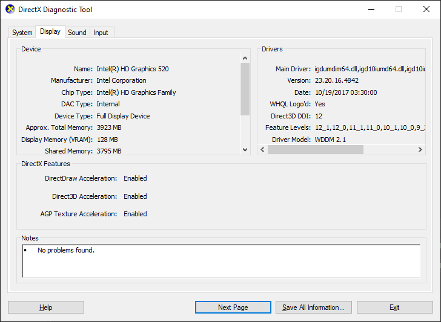
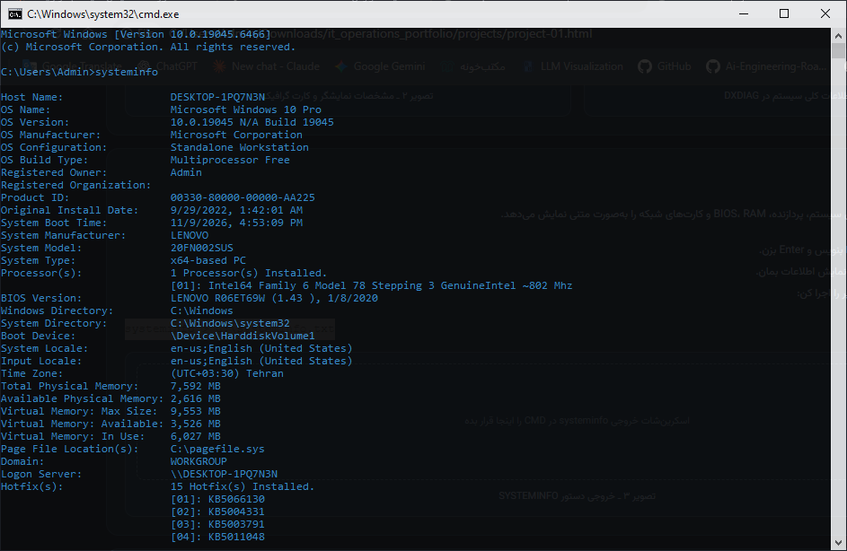
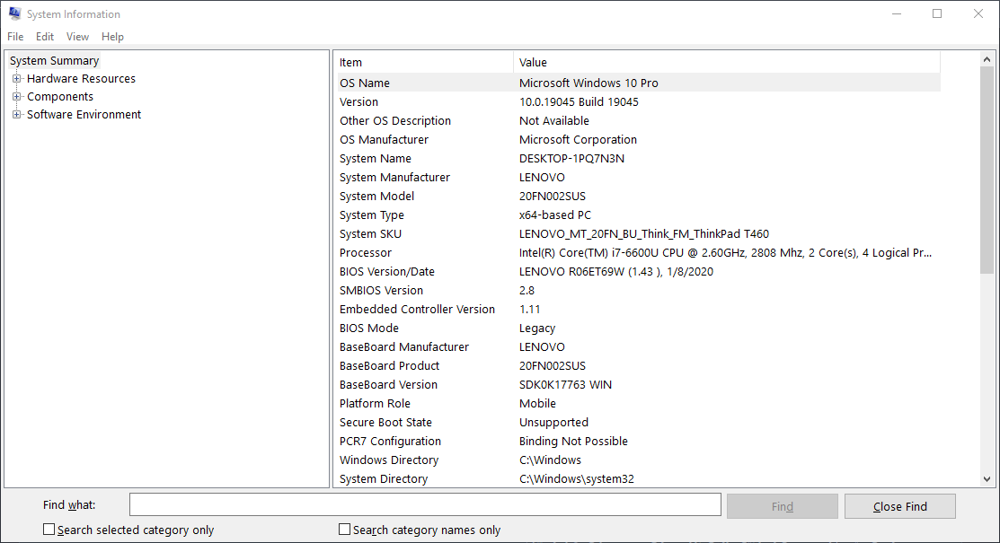

← Back to dashboardفارسی
MISSION 01 / 10 · FIELD REPORT

Figure 1 – General system information in DXDIAG Figure 2 – Display and graphics card specifications Figure 3 – Output of the SYSTEMINFO command Figure 4 – The System Information window
Full Computer Specifications Report
System Information — reviewing hardware and software specifications with built-in Windows tools
01 / Mission goal
The goal of this project is to identify and record the main hardware and software specifications of the computer using three built-in Windows tools.
02 / Tool one: DXDIAG
This tool displays information about the processor, memory, display, graphics card, sound and DirectX version.
- Press Win + R, type dxdiag and press Enter.
- In the System tab review the general specifications, and in the Display tab review the graphics card information.
- If needed, also check the Sound and Input tabs.
- To save the report, click Save All Information.

03 / Tool two: SYSTEMINFO
This command displays information such as the Windows version, system model, processor, BIOS, RAM and network adapters as text.
- Open the Run window with Win + R, type cmd and press Enter.
- Run the systeminfo command and wait for the information to appear.
- To save the output on drive C, run the following command:
systeminfo > C:\systeminfo.txt
04 / Tool three: MSINFO32
This tool displays system specifications graphically, organized by category.
- Press Win + R, type msinfo32 and press Enter.
- In System Summary, view general information such as Windows, processor, BIOS and RAM.
- If needed, also review Hardware Resources, Components and Software Environment.
- To save the report, choose Export from the File menu.

05 / Summary and findings
- Processor (CPU): Intel(R) Core(TM) i7-6600U CPU
- Memory (RAM): 8192 MB
- Graphics card (GPU): Intel(R) HD Graphics 520
- Operating system: Windows 10 Pro 64-bit